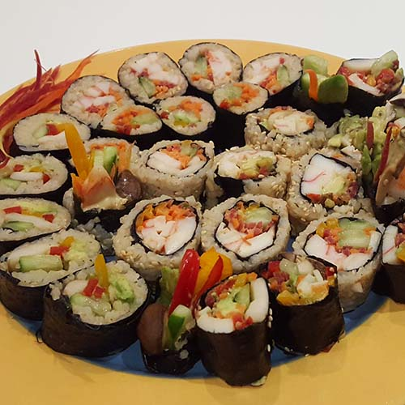
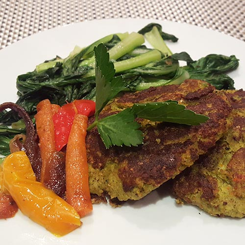
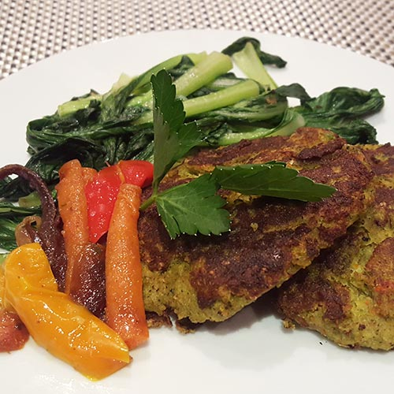
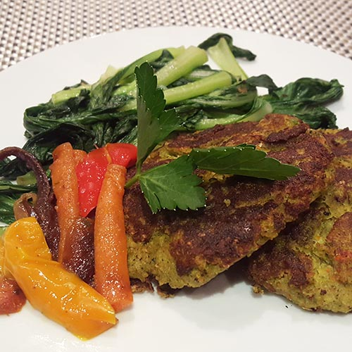
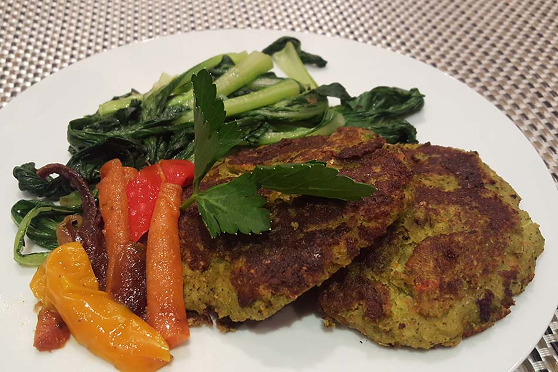
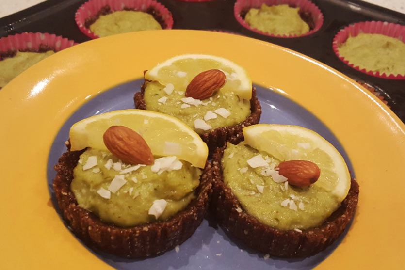

 


Recipes
Made from scratch. Here are a few of my favorite recipes.
Broccoli Burgers

Broccoli burgers (2 heads chopped/processed, 2 eggs, microwaved 3 small potatoes diced and mashed with roast carrots, onions, sweet potato, Himalayan salt, garlic powder, pepper, corn starch)
Raw Vegan Avocado Lemon Tarts

I originally wanted to make key lime pie but had lemons, so therefore they became lemon tarts. You can sub in any nut you want too.
Ingredients:
Crust:
- 1 cup dried unsweetened shredded coconut
- 1 cup dry almonds (not soaked)
- 3/4 to 1 cup organic raisins (or 4-6 medjool dates)
- pinch of himalayan salt
Filling:
- 2 small avocados
- 1 cup soaked almonds(or cashews, any nut you like)
- 1/4 cup lemon juice
- 2 tbsp orange zest
- 1/3 cup maple syrup
- 1/4 tsp sea salt
- 2 tsp pure vanilla extract or 1/2 vanilla bean
- 1/4 cup of coconut oil (melted)
Instructions
For the crust:
- Place coconut flakes, almonds, raisins and slat into food processor and blend until mixture starts to come together when squeezed.
- Place muffin cups into muffin try and press the mixture into the bottom and sides of the try, to form a cup. OR if you’re doing a cake, use a 6” springform pan and press into the bottom.
- Place into fridge or freezer to chill while you prepare the filling.
For the filling:
- Combine avocado, almonds, lemon, zest, maple syrup, salt, coconut oil, and vanilla into food processor or blender. Process until smooth.
- Put filling into the the crusts and place in fridge or freezer for 2-3 hours to chill and firm up.
- Enjoy!!